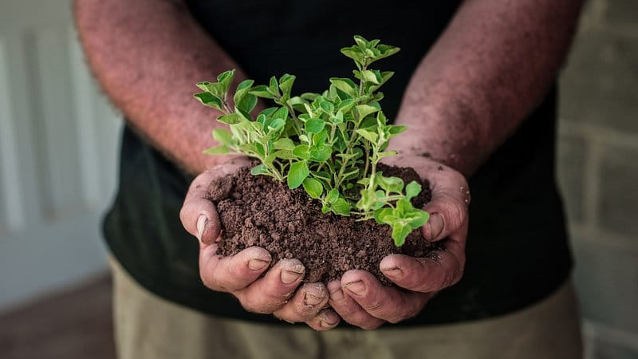
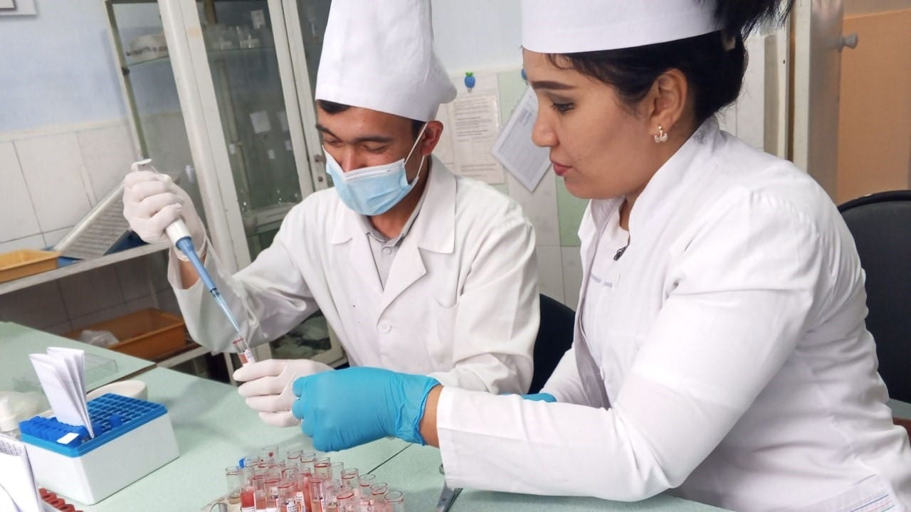
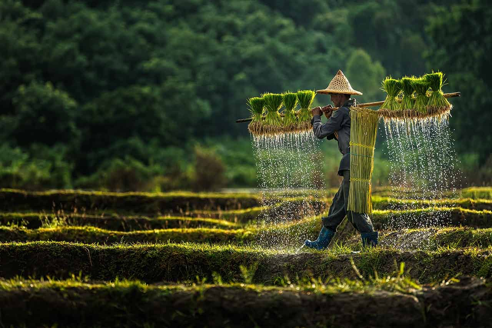
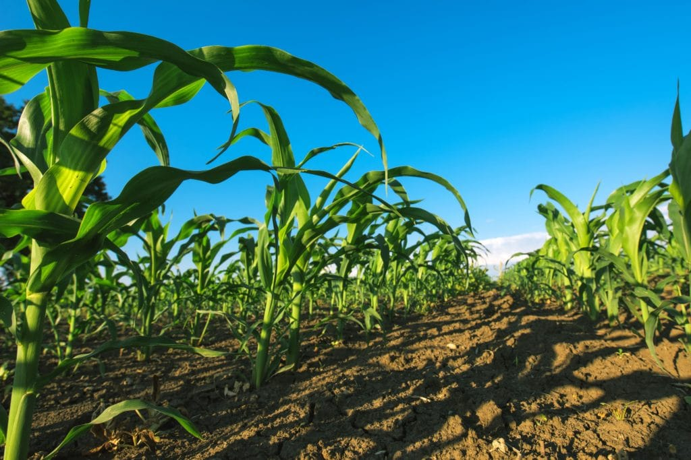
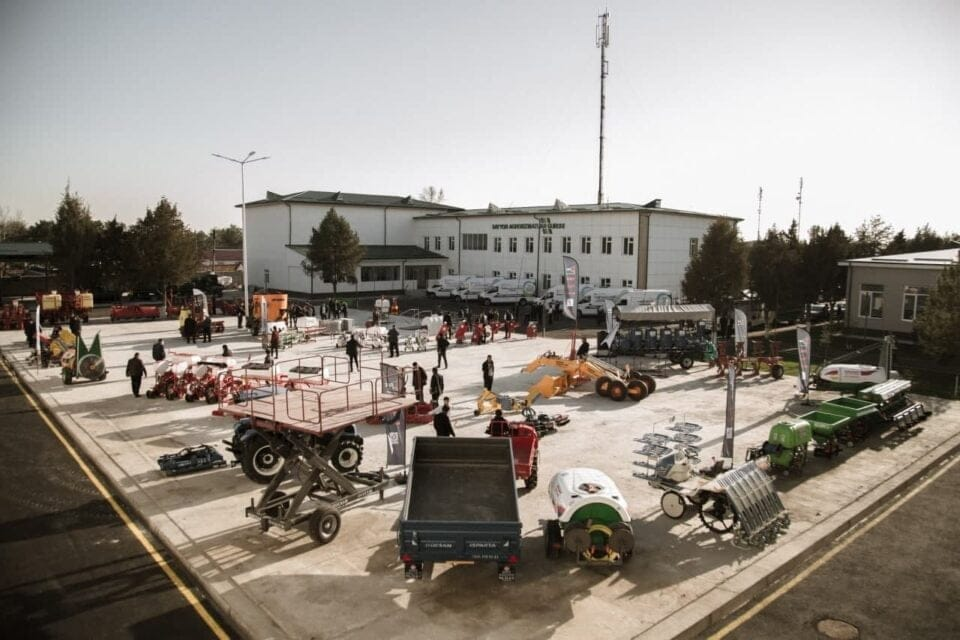

Yosh tadqiqotchilar maktabi-2026 ishtirokchilari aniqlandi
Avgust oyida Bishkekda bo'lib o'tadigan yosh tadqiqotchilar maktabiga 8 mamlakatdan 64 nafar PhD talaba tanlandi.

Toshkentda yangi O'zbek-Xitoy qo'shma laboratoriyasi ochildi
Toshkentda yangi O'zbek-Xitoy qo'shma laboratoriyasi ochildi

Tuproq sog'ligi indeksi: yangi mintaqaviy metrika
RCGA tadqiqotchilari mintaqa uchun moslashtirilgan yagona tuproq sog'ligi baholash tizimini taqdim etdi.

FAO va RCGA chorvachilik kasalliklariga qarshi yangi dastur
8 ta davlat bo'ylab PPR va boshqa yuqumli kasalliklarning monitoringi bo'yicha kelishuv imzolandi.

Olmaotada iqlim moslashuvi bo'yicha xalqaro konferensiya
RCGA, USAID va GIZ hamkorligida o'tkazilgan tadbirda 300+ ishtirokchi qatnashdi.

Platforma 5 000 ro'yxatdan o'tgan foydalanuvchi sariga yetdi
RCGA Digital v2.0 platformasi ishga tushgandan keyin uch oy ichida muhim chegarani bosib o'tdi.

"Voices on Central Asia": RCGA direktori bilan suhbat
Prof. Dilfuza Egamberdiyeva mintaqaning agrar kelajagi haqida muhim suhbat.

O'zbekistonda agro-xizmat markazlari tarmog'i kengaytirilmoqda
RCGA tavsiyalari asosida 12 ta yangi mintaqaviy markazning ochilishi rejalashtirilgan.

Yangi grant dasturi: yosh fermerlar uchun ilmiy yordam
35 yoshgacha bo'lgan fermerlar uchun ilmiy maslahat va texnik yordam dasturi e'lon qilindi.